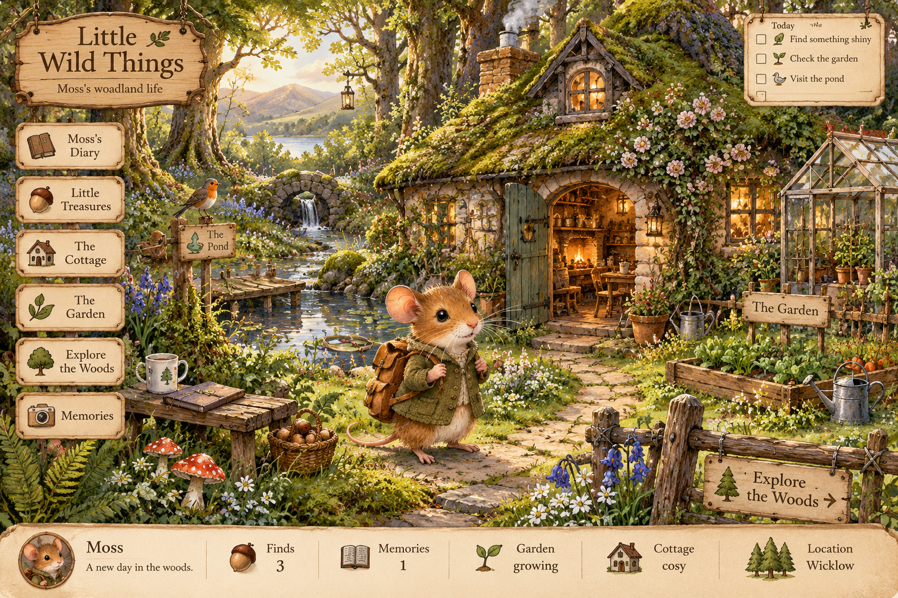

🌿 Little Wild Things
A tiny life in the Wicklow woods

🌳 Woods
💧 Pond
🏡 Cottage
🌱 Garden
🐭 Meet
Moss
A new day begins in the woods.
🌰 Finds:
0
📖 Memories:
0
✨ Curiosity:
0
Let Moss decide
▶ Start little life
Visit the cottage
Rename your creature:
📓 Diary
🎒 Treasures
🌱 Garden
🏡 Cottage
Woodland diary